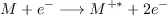

A mass spectrometer consists of three components: an ion source, a mass analyzer, and a detector, as shown in
Figure (1).
The ionizer converts the sample (which may be solid, liquid, or gas) into ions by bombarding it with electrons (electron ionization).
Only some of the collisions are energetic enough to knock one or more electrons out of the sample producing positive ions on the gas phase.
This may cause some of the sample's molecules to break into charged fragments.
An extraction system removes ions from the sample, which are then trajected through the mass analyzer.
The differences in masses of the fragments allows the mass analyzer to sort the ions by their mass/charge ratio, by
accelerating them with an electric or magnetic field, until the fragments reach the detector.
Results are displayed a spectrum of the relative abundance of detected ions as a function of the mass/charge ratio into
a "stick diagram".
The atoms or molecules in the sample can be identified by correlating known masses to the identified masses or through a characteristic fragmentation pattern.
In summary, the mass spectrum shows the mass of the ionized molecule and the masses of its corresponding ionic fragments.
When a highly energetic electron hits a neutral molecule, some of its energy is transferred to this molecule. If the transferred energy excess the ionization energy (IE) of the neutral molecule, then the ionization by ejection of one electron occurs, generating a molecular ion in an excited state.
|  | (1) |
|
|
Ionization of the sample molecules with 70 eV electrons produces molecular ions whose internal energy values (E) typically cover a broad range from 0 eV up to 20 eV. The nature and extent of these reactions depend only on the ion's structure and internal energy irrespective of the ionization method.
The electron impact ionization of a molecule is a process which takes place in approximately 10-16 s and initially yields the exited molecular ion. The process is much more rapid than the time of one vibration, which is about 10-14 s. The distances between atoms thus do not change during the ionization. Thus, this ionization/excitation process can be seen as a vertical transition. After the ionization, the energy is distributed over the various molecule's degrees of freedom in a statistical fashion.
The fast exchange of internal energy occurs not only between the various degrees of freedom of the same electronic state but also between all the degrees of freedom of all the electronic states. These exchanges lead to the conversion of electronic energy acquired during ionization into vibrational and rotational energy of the ground electronic state of the molecular ion. It can be shown experimentally that the statistical energy distribution is carried out within a time span corresponding to a few vibrations, that is less than 10-10 s. Note that this time span is very short with respect to the time spent in the spectrometer source, at least 10-7 s. Then, fragmentation can be studied independently of the excitation process. Thus the probabilities of the various possible decompositions of an ion depend only on its structure and internal energy, and not on the method used for the initial ionization , or on the structure of the precursor for, or formation mechanism of, the ion undergoing decomposition. S. Weerasinghe et. al. (J. Chem. Phys. 98 (1993) 4967) have shown that the dynamical evolution of a complicated many-body system is mainly guided by the accessible phase-space. Then, statistical mechanics provides the appropriate theoretical framework for conducting this kind of simulations.